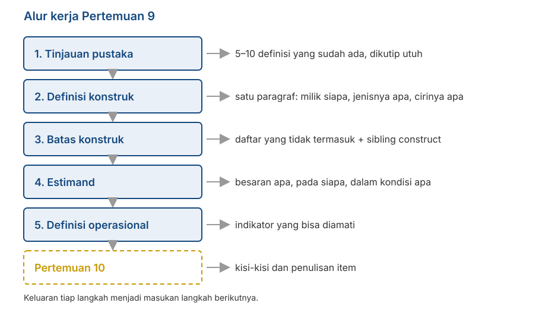

Pengenalan Konstruk dan Penetapan Estimand
Penyusunan Skala Psikologi
2026-09-02
Outline
- Apa yang harus dihasilkan kelompok Anda hari ini
- Tinjauan pustaka yang berguna untuk penyusunan skala (dan yang tidak)
- Cara menuliskan definisi konstruk yang bisa dipakai
- Batas konstruk: apa yang tidak termasuk, dan sibling construct
- Estimand: besaran apa, pada siapa, dalam kondisi apa
- Dari definisi konstruk ke definisi operasional
Mulai mengerjakan
Yang berubah mulai hari ini
Tujuh pertemuan pertama membahas apa yang perlu Anda ketahui. Mulai sekarang, semuanya menjadi keputusan yang harus kelompok Anda ambil.
Pertemuan hari ini bukan kuliah. Sebagian besar waktunya adalah kerja kelompok.
Yang Anda hasilkan hari ini akan dipakai terus sampai Pertemuan 15.
Alur kerjanya

Kenapa langkah ini sering dilewati
Banyak laporan langsung mulai dari “kami mengadaptasi skala X”. Definisi konstruknya tidak pernah ditulis, karena dianggap sudah jelas.
DeVellis menyebut ini “deceptively obvious”: banyak peneliti mengira mereka sudah punya gambaran yang jelas, lalu menyadari bahwa gambarannya kabur, biasanya setelah item ditulis dan data dikumpulkan.
Pada kondisi seperti ini, memperbaikinya jauh lebih sulit daripada kalau dipersiapkan sejak awal.
Langkah 1️⃣: tinjauan pustaka
Tinjauan pustaka
Anda tidak sedang merangkum semua penelitian tentang konstruk yang Anda pilih.
Yang Anda cari sangat spesifik: bagaimana orang lain mendefinisikan konstruk ini, dan di mana definisi-definisi itu berbeda satu sama lain.
Targetnya sederhana: 5 sampai 10 definisi, dikutip utuh, lengkap dengan sumbernya.
Cara mencatatnya
Buat tabel tiga kolom: sumber, definisi (dikutip persis), apa yang ditekankan. Jangan diparafrasekan dulu. Perbedaan antar-definisi sering terletak pada kata-kata yang tepat.
Yang Anda cari di dalam tabel
Titik temu. Unsur apa yang muncul di hampir semua definisi? Itu kemungkinan besar inti konstruknya.
Titik beda. Unsur apa yang hanya muncul di sebagian definisi? Di situlah Anda harus mengambil sikap.
Yang tidak pernah disebut. Kadang ada aspek yang jelas relevan tetapi tidak muncul di definisi mana pun. Itu bisa menjadi kontribusi kelompok Anda, asalkan Anda menyatakannya secara terbuka.
Note
Ingat temuan Fried (2017) dari Pertemuan 1: tujuh skala depresi memuat 52 gejala berbeda. Perbedaan definisi sebenarnya adalah hal yang biasa.
Langkah 2️⃣: menuliskan definisi konstruk
Tiga hal yang harus ada
Definisi yang bisa dipakai menyebutkan:
Milik siapa atribut ini. Individu? Kelompok? Pasangan? Organisasi?
Jenisnya apa. Sifat yang relatif menetap (trait), kondisi sesaat (state), kemampuan, sikap, keyakinan, atau pola perilaku?
Ciri-ciri pokoknya. Unsur apa yang harus ada supaya sesuatu disebut sebagai konstruk ini?
“Milik siapa”
Kita sudah membahas ini di Pertemuan 3: variabel laten biasanya adalah karakteristik orang yang datanya diambil.
Kalau Anda meminta mahasiswa menilai dosennya, yang Anda ukur adalah persepsi mahasiswa, bukan sifat dosennya.
Kalau Anda meminta orang tua melaporkan perilaku anaknya, yang Anda ukur adalah laporan orang tua, bukan perilaku anak secara langsung.
Periksa lagi
Nama konstruk pada laporan Anda harus sesuai dengan siapa yang mengisi kuesionernya. Ketidaksesuaian di sini akan merembet ke seluruh laporan.
Kesalahan yang sering muncul
| Definisi | Masalahnya |
|---|---|
| “Kecemasan akademik adalah kecemasan yang dialami dalam konteks akademik.” | Melingkar. Kata yang didefinisikan dipakai lagi di dalam definisinya. |
| “Kecemasan akademik adalah skor pada Skala Kecemasan Akademik.” | Menyebut alat ukur, bukan makna. Ini definisi operasional yang salah tempat. |
| “Kecemasan akademik adalah perasaan tidak nyaman terkait perkuliahan.” | Terlalu kabur. “Tidak nyaman” bisa berarti apa saja. |
| “Kecemasan akademik adalah gangguan yang merugikan mahasiswa.” | Menghakimi. Definisi menjelaskan apa fenomena psikologis tersebut, bukan menilai baik-buruknya. |
Seberapa spesifik?
Tingkat kekhususan konstruk adalah keputusan Anda, bukan sesuatu yang muncul dengan sendirinya.
Contoh dari DeVellis: locus of control. Rotter (1966) menyusunnya secara umum. Levenson (1973) memisahkan tiga sumber kendali. Wallston dkk. (1978) mengkhususkannya pada konteks kesehatan. Versi berikutnya bahkan bisa dikhususkan lagi pada satu penyakit tertentu.
Keempatnya berguna. Yang menentukan mana yang tepat adalah pertanyaan penelitiannya.
Prinsipnya
Dua variabel akan berkorelasi paling kuat dengan variabel lain kalau tingkat kekhususannya sepadan. Skala yang sangat umum (general domain) tidak akan memprediksi perilaku yang sangat khusus (domain specific) dengan baik, dan sebaliknya.
Langkah 3️⃣: batas konstruk
Menyebutkan apa yang tidak termasuk cakupan konstruk
Kita sudah menyinggungnya sejak Pertemuan 1: menyebutkan apa yang tidak termasuk lebih menentukan kualitas skala daripada menyebutkan apa yang termasuk.
Alasannya terlihat pada gambar Pertemuan 7. Tanpa batas yang jelas, isi skala mudah melebar ke wilayah yang tidak Anda maksud, dan itu menjadi construct-irrelevant variance.
Caranya
Tulis dua daftar berdampingan: termasuk dan tidak termasuk. Isi keduanya dengan contoh konkret, bukan kategori abstrak.
Sibling construct
Untuk tiap konstruk yang mirip, tuliskan satu kalimat: apa bedanya dengan konstruk saya?
Contoh: kecemasan sosial dan rasa malu. Keduanya melibatkan ketidaknyamanan dalam situasi sosial. Bedanya terletak pada ketakutan akan penilaian negatif dan pada tingkat penghindaran.
Kalau Anda tidak bisa menuliskan bedanya, kemungkinan besar Anda memang belum bisa memisahkan keduanya lewat item yang konkrit.
Note
Daftar ini akan langsung berguna di Pertemuan 12, ketika Anda memilih skala pembanding untuk bukti validitas diskriminan.
2️⃣ kekeliruan yang umum terjadi
Jingle fallacy — mengira dua hal sama karena namanya sama. Dua skala “resiliensi” bisa mengukur hal yang sangat berbeda.
Jangle fallacy — mengira dua hal berbeda karena namanya berbeda. “Grit” dan “conscientiousness” berkorelasi sangat tinggi, meski dinamai berbeda.
Langkah 4️⃣: menetapkan estimand
Istilah yang dipinjam dari tempat lain
Dalam penelitian kuantitatif, estimand adalah besaran yang ingin Anda ketahui, dinyatakan sebelum Anda memilih metode apa pun.
Lundberg, Johnson, & Stewart (2021) berargumen bahwa banyak penelitian melompati langkah ini: metodenya dipilih lebih dulu, lalu maknanya ditentukan belakangan.
Gagasan yang sama berguna untuk pengukuran. Sebelum menulis satu item pun, nyatakan besaran apa yang ingin Anda estimasi.
Empat pertanyaan
Apa nama atribut ukurnya? Tingkat atribut pada seseorang? Posisi relatif dibanding orang lain? Ada atau tidaknya suatu kondisi?
Pada siapa? Populasi sasarannya harus disebut secara spesifik — bukan “masyarakat”, melainkan misalnya “mahasiswa S1 aktif di Surabaya, usia 18–24”.
Dalam kondisi apa? Apakah yang diukur keadaan sekarang, kecenderungan umum, atau pengalaman dalam kurun waktu tertentu?
Dibandingkan dengan apa? Skor akan ditafsirkan relatif terhadap orang lain (norma), atau relatif terhadap suatu patokan tetap (kriteria)?
Contoh kalimat estimand
Kami ingin mengestimasi tingkat kecemasan sosial yang dialami dalam sebulan terakhir pada mahasiswa S1 aktif berusia 18–24 tahun di Surabaya, dan menafsirkannya secara relatif terhadap sebaran skor kelompok tersebut.
Perhatikan bahwa kalimat ini menentukan banyak hal sekaligus: kurun waktu pada item, populasi uji coba di Pertemuan 12, dan bentuk norma di Pertemuan 14.
Kalimat ini juga menutup pintu bagi klaim yang tidak Anda uji. Skor Anda tidak berlaku untuk anak SMA atau pekerja, dan Anda sudah menyatakannya sejak awal.
Tip
Satu kalimat ini adalah bagian tersulit dari pekerjaan hari ini. Kalau kelompok Anda bisa menuliskannya dengan jelas, sisa perkuliahan semester ini jauh lebih mudah.
Kaitannya dengan pertemuan lain
| Bagian estimand | Menentukan |
|---|---|
| Besaran apa | Format respons (TM4–5) dan bentuk skor |
| Pada siapa | Sampel uji coba (TM12), pemeriksaan antar-kelompok (TM13) |
| Dalam kondisi apa | Kurun waktu pada kalimat item (TM10) |
| Dibandingkan dengan apa | Bentuk norma dan skor standar (TM14) |
Langkah 5️⃣: definisi operasional
Fungsinya sebagai jembatan
Definisi konstruk menjelaskan apa yang Anda maksud. Definisi operasional menjelaskan bagaimana hal itu muncul dalam sesuatu yang bisa diamati.
Isinya berupa indikator: perilaku, pikiran, atau perasaan konkret yang menandakan tingginya atribut tersebut.
Belum berupa item. Item disusun di Pertemuan 10, berdasarkan indikator ini.
Contohnya
Konstruk: kecemasan sosial
Aspek: ketakutan akan penilaian negatif
Indikator: khawatir dinilai bodoh ketika berbicara; memikirkan ulang percakapan setelah selesai; menghindari bertanya di kelas meski tidak paham
Item (Pertemuan 10): “Setelah berbicara di depan kelas, saya memikirkan ulang apa yang tadi saya katakan.”
Note
Tiap indikator sebaiknya menghasilkan lebih dari satu item. Ingat dari Pertemuan 6 bahwa jumlah item ikut menentukan reliabilitas, dan dari Pertemuan 7 bahwa cakupan isi menentukan validitasnya.
Struktur dimensinya
Sekarang saatnya menyatakan: konstruk Anda satu dimensi atau beberapa dimensi?
Kalau beberapa, sebutkan dimensinya dan jelaskan hubungan antar-dimensi itu.
Nyatakan juga apakah Anda memperlakukannya sebagai dimensional/continuum atau kategorikal — asumsi ketiga dari Pertemuan 2.
Kerja kelompok
Yang dikerjakan hari ini
15 menit — Kumpulkan definisi yang sudah ada. Minimal lima, dikutip utuh dengan sumbernya.
20 menit — Tulis definisi konstruk kelompok Anda. Satu paragraf, memuat tiga unsur dari tadi.
20 menit — Buat dua daftar: termasuk dan tidak termasuk. Tambahkan dua sibling construct beserta pembedanya.
20 menit — Tulis satu kalimat estimand, menjawab empat pertanyaan tadi.
20 menit — Uraikan aspek dan indikator. Minimal dua indikator per aspek.
Pemaparan singkat
Tiap kelompok menyampaikan dua hal saja, masing-masing satu menit:
Kalimat estimand Anda.
Satu konstruk sibling dan apa bedanya dengan konstruk Anda.
Tip
Kelompok lain dipersilakan bertanya satu hal: “apa yang membuat kalian yakin item kalian tidak akan ikut mengukur sibling construct itu?”
Yang harus dihasilkan
Uraian spesifikasi konstruk
Satu halaman, memuat:
- Definisi konstruk — satu paragraf, dengan rujukan.
- Batas konstruk — daftar termasuk dan tidak termasuk.
- Sibling construct — minimal dua, beserta pembedanya.
- Estimand — satu kalimat.
- Struktur dimensi — satu atau beberapa dimensi, dan alasannya.
- Aspek dan indikator — dalam bentuk tabel.
Note
Uraian ini menjadi lampiran laporan akhir Anda, dan menjadi bahan yang dinilai oleh panel ahli di Pertemuan 11. Panel tidak bisa menilai relevansi item tanpa membaca definisi konstruknya lebih dulu.
Untuk Pertemuan 10
- Kita menyusun kisi-kisi (blueprint): berapa item untuk tiap aspek, dan kenapa harus sebanyak itu.
- Menulis item, dengan kaidah yang sudah kita bahas di Pertemuan 4 dan 5.
- Kesalahan penulisan item yang paling umum: item ganda, kalimat berbelit, kata bersayap, dan item bernada terbalik yang salah rancang.
- Bawa uraian spesifikasi konstruk kelompok Anda. Tanpa itu, tidak ada yang bisa dikerjakan.
Persiapan
Baca DeVellis & Thorpe (2022), Bab 5, bagian tentang penulisan item.
Ada pertanyaan❓

Catatan
- Paparan disusun dengan menggunakan dan Quarto dengan template dari UNAIR Theme.
- Kontak saya via amelia.zein@psikologi.unair.ac.id
Rujukan
DeVellis, R. F., & Thorpe, C. T. (2022). Scale development: Theory and applications (5th ed.). SAGE.
Flake, J. K., & Fried, E. I. (2020). Measurement schmeasurement: Questionable measurement practices and how to avoid them. Advances in Methods and Practices in Psychological Science, 3(4), 456–465.
Fried, E. I. (2017). The 52 symptoms of major depression. Journal of Affective Disorders, 208, 191–197.
Kelley, T. L. (1927). Interpretation of educational measurements. World Book.
Levenson, H. (1973). Multidimensional locus of control in psychiatric patients. Journal of Consulting and Clinical Psychology, 41(3), 397–404.
Lundberg, I., Johnson, R., & Stewart, B. M. (2021). What is your estimand? Defining the target quantity your research question aims to answer. American Sociological Review, 86(3), 532–565.
Podsakoff, P. M., MacKenzie, S. B., & Podsakoff, N. P. (2016). Recommendations for creating better concept definitions in the organizational, behavioral, and social sciences. Organizational Research Methods, 19(2), 159–203.
Rotter, J. B. (1966). Generalized expectancies for internal versus external control of reinforcement. Psychological Monographs, 80(1), 1–28.
Wallston, K. A., Wallston, B. S., & DeVellis, R. (1978). Development of the Multidimensional Health Locus of Control (MHLC) scales. Health Education Monographs, 6(2), 160–170.